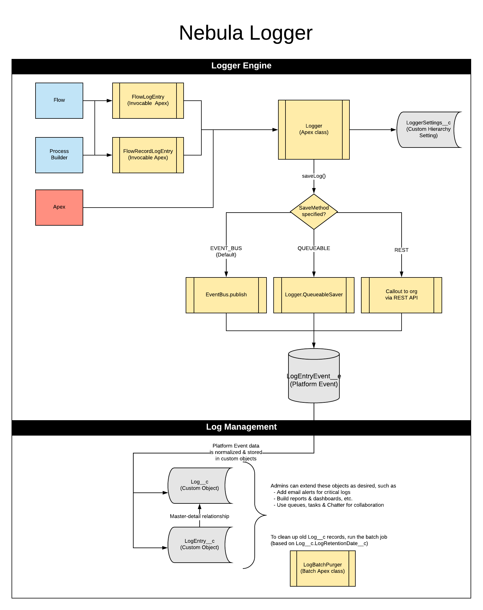
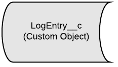
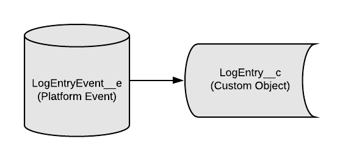
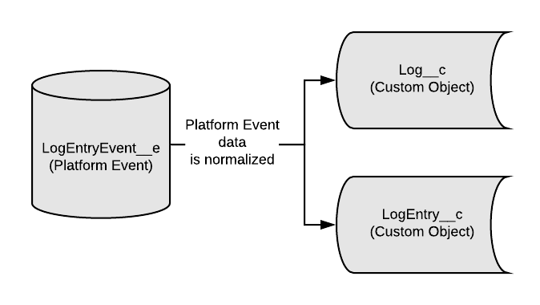
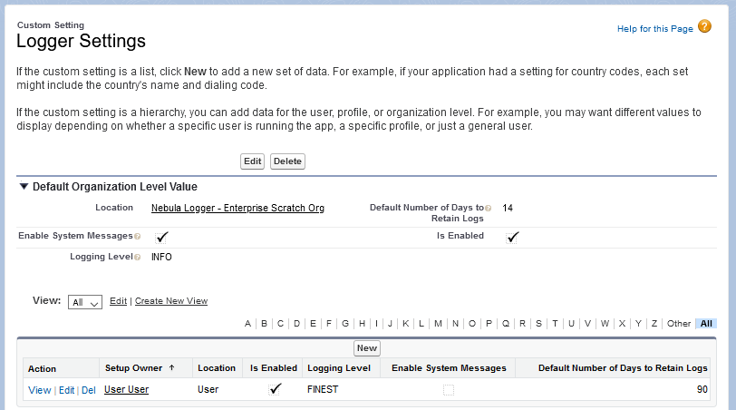
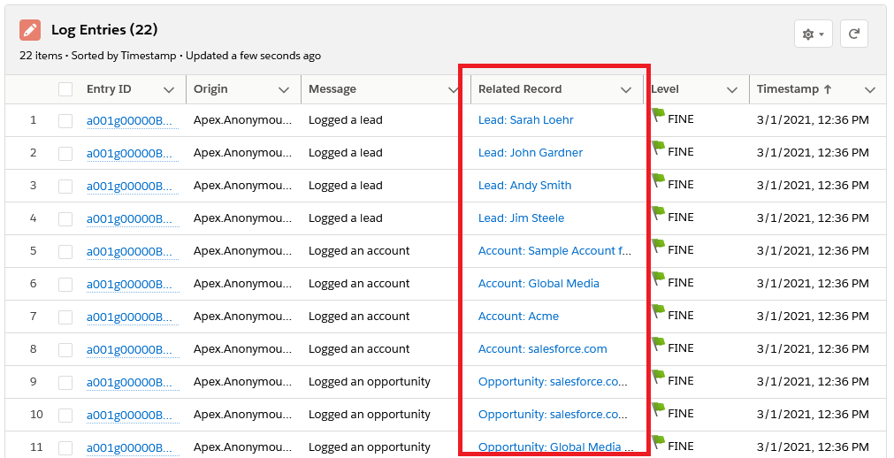
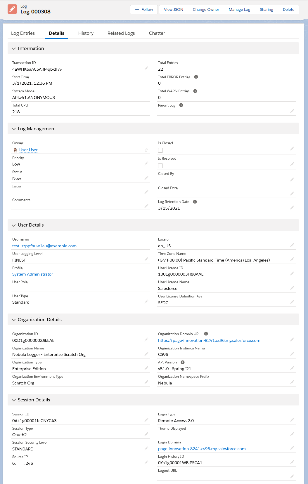
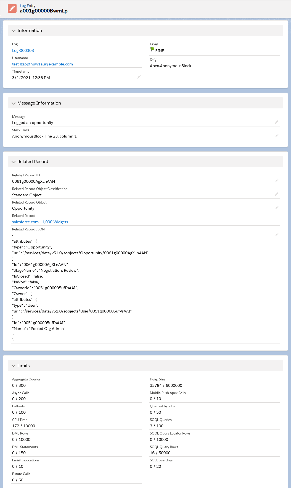

Advanced Logging Using Nebula Logger
./img/joys-of-apex-thumbnail.png
Today's post is a guest post by Jonathan Gillespie -- a good friend of mine, and our first guest author! I'm really excited to have him here to talk about Nebula Logger. While it's a project that I've contributed to, it's Jonathan's brain child, and there's nobody more qualified when it comes to the subject of logging within the Salesforce platform. I'll include a little more on our shared story in the postscript -- enjoy!
Jonathan: I've enjoyed working with the Salesforce platform for nearly a decade - over this time Salesforce has implemented countless new features that have really improved the platform both for Salesforce implementation experts (admins, developers, architects and more) as well as for Salesforce users. But we all know that no system is without issue - every system has bugs, every project has missed requirements & scenarios, and we need to be able to easily answer some questions about our Salesforce orgs:
- What's happening in my Salesforce orgs?
- Are we experiencing any errors?
- In what environment did the error happen?
- Who was the logged-in user?
- What record was being created/updated when it happened?
- Are we being proactive about fixing the issue?
- Did our scheduled batch job finish?
Despite Salesforce's releases over the years, I still find myself struggling to answer some of these questions using only features provided out of the box. The inspiration for what would become Nebula Logger was born. But first...
linkWhat Logging Does Salesforce Provide
Salesforce does provide some basic logging functionality out-of-the-box for both Apex and Flow. However, it has some major limitations
- You must enable logs for each user 🡪 limit of 24 hours max
- Debug logs can be truncated
- Salesforce auto-purges old logs
- Each debug log must be 20 MB or smaller
- System debug logs are retained for 24 hours. Debug logs are retained for 7days.
- In Flow, admins/devs cannot add any equivalent to a 'debug statement' to help with their troubleshooting
- Reporting & monitoring of logs is very limited. Paid add-ons (like Salesforce Shield) or 3rd party tools are typically needed for more details reporting & monitoring.
These limits can make it difficult to rely on Salesforce's logging to troubleshoot issues, especially if it's an inconsistent issue, or the user does not know how to recreate the issue.
linkIntroducing Nebula Logger
Several years ago, I found myself struggling with some of these major limitations of the logging & debug tools provided by Salesforce. I explored other options on AppExchange and elsewhere, but ultimately decided to just start working on my own project - Nebula Logger. It's an open source project that I've tinkered with for years (along with the help of none other than James Simone himself) to try to solve several logging challenges when working with the Salesforce platform.
Nebula Logger is an ever-evolving attempt at building a logging tool that helps to answer these questions (and more) for Salesforce implementations. The current version of Nebula Logger, v4.0.0, has 10 core features designed to work natively on the Salesforce platform (available as a managed package and unpackage code)

linkFeature #1: Use Salesforce Features to Manage Logs
When I first started working on Nebula Logger, I had already been implementing Salesforce for a few years - and I was frustrated not only that Salesforce's logging was limited, but also by the fact that Salesforce provides so much functionality for other projects, but I couldn't use it (natively) to manage logs. I set out to create a logging tool that would let me leverage Salesforce itself to manage logs, and quickly realized that "simply" storing data in custom objects would open up the possibilities of using several features, including
- Create Salesforce reports & dashboards for monitoring logs
- Leverage list views and App Builder for navigating & viewing logs
- Assign important logs to users & queues
- Use Chatter for collaborating on logs
This gave me the first custom object & project goal: use a LogEntry__c custom object to store log data.

linkFeature #2: Log AND Throw Exceptions
One of the most basic (if not the most critical) reasons that you might want to log something in any system: an error occurred, and we want to know about it. Seems pretty basic, but for years, you could not (easily) accomplish this within Salesforce.
Prior to the Summer '17 release: there was a major architectural limitation that made a true custom logging system nearly impossible - any error in Salesforce (declarative errors, throwing Apex exceptions, etc.) would cause all DML statements in the current transaction to roll back. This meant that you couldn't log an error AND throw an exception. There were a few ways to work around this limitation, but none of them were ideal and did not work in all situations.
1link try {2link update someRecord;3link } catch(Exception apexException) {4link // Simple example of catching an error & trying to log it5link // before Platform Events (using a custom object)6link insert new LogEntry__c(7link ErrorMessage__c = apexException.getMessage()8link );9link10link // After inserting a log entry (or any SObject record)...11link //... throwing this exception would still automatically rollback the insert operation12link throw apexException;13link }Spring '17 - Platform Events - But in Spring '17, Salesforce released Platform Events, a new type of object that uses event-driven architecture to publish & subscribe to certain 'events' within the system. In my opinion, this is when a true logging system finally became feasible; using Platform Events, we can now create event records that are always generated, even if an exception occurs.
1link try {2link update someRecord;3link } catch(Exception apexException) {4link // Using Platform Events & the EventBus class, we can publish events even if an exception is thrown5link EventBus.publish(new LogEntryEvent__e(6link ErrorMessage__c = apexException.getMessage()7link ));8link9link // Publishing a log entry event (or any Platform Event that uses the 'Publish Immediately' behavior)10link //... will still occur, even if an exception is thrown after the EventBus is called11link throw apexException;12link }
Platform Events are now the go-to option for handling logging in Salesforce - Nebula Logger uses a platform event object called LogEntryEvent__e to ensure that log entries are published, even if an error occurs.

Note from James -- because for so many years it was impossible to achieve true logging within Salesforce since exceptions couldn't be logged to a custom object, and because many companies use a variety of applications in addition to Salesforce, it's still not unheard of to export Salesforce error logs to a centralized database for logging exceptions (be it some localized Kibana stack, or a 3rd party solution like Rollbar). You can find more info about these approaches in the Apex Logging Service article. Perhaps I'll have to twist Jonathan's arm into supporting also sending the contents of logs to an external system as part of Nebula 😇!
linkFeature #3: Unified Log with a Unique Transaction ID
Not only do we want to log data, but we want to see all related log entries together - any entries created during the same transaction should be related together. To accomplish this, we need a unique ID for the transaction so we can relate multiple 'log entries' to a single 'log' record for a unified logging record. This sounds like another feature that should be easy, but until recently, it was another major gap in the platform.
- Prior to Winter '21: no king of transaction ID was provided. Presumably, Salesforce had a way to internally see a transaction ID, but there was no way for us to see or leverage it in Apex or Flow. Prior to Winter '21, my best solution was not an easy solution - I (tried to) port the UUID v4 standard to Apex just so I could easily create a unique ID during an Apex transaction (Apex still lacks the native ability to create a UUID/GUID).
- Winter '21 - Quiddity: In the Winter '21 release, Salesforce finally added a way in Apex to see a unique transaction ID, as well as other details about the current transaction, such as the request type (available through the Request class). Nebula Logger now uses Salesforce's provided Request ID as the
Log__crecords unique ID (implemented by James Simone!). More details about detecting the Apex runtime are available in Salesforce Help.
Retrieving the unique transaction ID can now be accomplished with 1 line of code.
1linkString uniqueTransactionId = System.Request.getCurrent().getRequestId();
With a unique ID (and external ID fields), we can expand the data model so related log entries are tied to a single log record.

linkFeature #4: Support All of Salesforce's Logging Levels
Ideally, we want to always track and know everything about our system. Realistically, logging adds overhead, and some log entries are more important than others
- More logging == more data storage is used
- More logging == more CPU time, DML statements (and other platform limits) is used
Although the specific levels aren't consistent between each language, most modern programming languages and logging tools support different logging levels. In Apex (and Nebula Logger), there are 7 supported logging levels.
1linkSystem.debug(LoggingLevel.ERROR, 'example ERROR message');
2linkSystem.debug(LoggingLevel.WARN, 'example WARN message');
3linkSystem.debug(LoggingLevel.INFO, 'example INFO message');
4linkSystem.debug(LoggingLevel.DEBUG, 'example DEBUG message');
5linkSystem.debug(LoggingLevel.FINE, 'example FINE message');
6linkSystem.debug(LoggingLevel.FINER, 'example FINER message');
7linkSystem.debug(LoggingLevel.FINEST, 'example FINEST message');
I've tried various method signatures over the years for providing a way to control a log entry's level, and ultimately, level-specific methods (with several overloads) has been the most popular approach. This provides a simple way to assign importance to each log entry, based on the selected logging level method.
1linkLogger.error('Add log entry using Nebula Logger with logging level == ERROR');
2linkLogger.warn('Add log entry using Nebula Logger with logging level == WARN');
3linkLogger.info('Add log entry using Nebula Logger with logging level == INFO');
4linkLogger.debug('Add log entry using Nebula Logger with logging level == DEBUG');
5linkLogger.fine('Add log entry using Nebula Logger with logging level == FINE');
6linkLogger.finer('Add log entry using Nebula Logger with logging level == FINER');
7linkLogger.finest('Add log entry using Nebula Logger with logging level == FINEST');
8linkLogger.saveLog();
Every project is different, so every Salesforce team will need to decide on what logging levels to use for their org's implementation. But my general guideline is:
- Not everything you log should always be logged - use levels
ERROR,WARNorINFOfor the truly important info. - For less critical entries (but entries that may still provide useful info in certain situations), I use
DEBUG,FINE,FINERorFINESTlogging levels.
Using the custom hierarchy setting LoggerSettings__c, you can then control which log entries are generated & saved at 3 levels: the org (i.e., the default behavior for the environment), a profile, or user. This is useful for easily scaling your logging needs. For example, if you're deploying a new feature in your org for a particular team/department, you can update the logging levels for the team (either using profile or user-level settings) to enable more granular logging. This is a great way to help monitor production orgs; once you feel confident that everything is working as expected, you can then reduce the logging level to only include more important logging levels.

linkFeature #5: Be Able to Log Code and Declarative Automations
Although some older automations, like Workflow rules, are still in use, Salesforce is focused on Flow for declarative automations and Apex for backend coding - Nebula Logger supports adding log entries for both Apex and Flows (as well as Process Builder, since it shares some of Flow's capabilities).
- Apex developers: log everything using the
Loggerclass - Flow builders (and process builder): add log entries & record-specific log entries using one of the invocable methods in
FlowLogEntryandFlowRecordLogEntryclasses
My plan (insert safe harbor statement here) is to eventually add logging for Lightning Web & Aura components.
linkFeature #6: Relate Log Entries to Any Record
When logging data, you may (frequently) want to log what particular SObject record is being created/updated/processed - this could be any standard or custom object, so a Salesforce logging tool should be able to handle any SObject type.
Salesforce does have a feature for this type of functionality - polymorphic lookup fields, available on objects like Task and objects with an OwnerId field
Task.WhoIdcan be either a Lead ID or a Contact ID.Task.WhatIdcan be one of several standard objects, or any custom object with activities enabled.- Most
OwnerIdfields - likeLead.OwnerId,Case.OwnerId,MyExampleObject__c.OwnerId- are polymorphic fields - if you enable queues for the object, then theOwnerIdfield can be a user ID or a queue (group) ID.
Just one problem: we can't create custom polymorphic fields. This has been an idea on Salesforce's Idea site since 2012, and the status is still "Not Planned", so it doesn't seem like this will be add natively any time soon. But using external IDs, formula fields and Apex code, Nebula Logger can simulate polymorphic fields in a scalable way that works with any SObject. It also provides several overloaded methods where you can pass an Id recordId or SObject record as parameters.
1linkAccount account = [SELECT Id, Name, AccountNumber, RecordTypeId, RecordType.Name FROM Account LIMIT 1];
2linkLogger.info('Example of logging an SObject record', account);
3linkLogger.fine('Example of logging a record ID', account.Id);
4linkLogger.saveLog();
Even if you log multiple SObject types, Nebula Logger will automatically track the SObject Type, record name and more.

linkFeature #7: Advanced Transaction Controls for Apex Developers
On many of my projects, I typically add logging into my project's trigger framework. This usually involves adding log entries that log details about the current trigger's SObject, and auto-saving at the end of each trigger. This helps tremendously with logging day-to-day operations when a user is simply updating a single record through the UI. But for more complex operations (such as batch jobs, data imports, etc.), the operations can be negatively impacted by the logging tool.
To help in these situations, Apex developers can use additional Logger methods to dynamically control how logs are saved during the current transaction.
Logger.suspendSaving()– causes Logger to ignore any calls tosaveLog()in the current transaction untilresumeSaving()is called. Useful for reducing DML statements used by LoggerLogger.resumeSaving()– re-enables saving aftersuspendSaving()is usedLogger.flushBuffer()– discards any unsaved log entriesLogger.setSaveMethod(SaveMethod saveMethod)- this method lets developers controls how log entries are saved.Logger.SaveMethod.EVENT_BUS- The default save method, this uses theEventBusclass to publishLogEntryEvent__erecords.Logger.SaveMethod.QUEUEABLE- This save method will triggerLoggerto save any pending records asynchronously using a queueable job. This is useful when you need to defer some CPU usage and other limits consumed byLogger.Logger.SaveMethod.REST- This save method will use the current user's session ID to make a synchronous callout to the org's REST API. This is useful when you have other callouts being made and you need to avoid mixed DML operations.
linkFeature #8: Automatically Log Details About the Org, User and Record
Ideally, a logging tool should be easy to use, but provide a wealth of information. Nebula Logger automatically sets additional fields for all Apex and Flow logs
Log__c- Automatically stores details about the org, user, session and experience site (when applicable)
LogEntry__c- Automatically stores details about the related record (including the record's JSON), as well as details about all platform limits at the time that the log entry was generated.
linkFeature #9: Track Related Logs for Async Processes (like Apex batchable and queueable jobs)
In Salesforce, asynchronous jobs like batchable and queuable run in separate transactions - each with their own unique transaction ID. To relate these jobs back to the original log, Apex developers can use the method Logger.setParentLogTransactionId(String). Nebula Logger uses this value to relate child Log__c records, using the field Log__c.ParentLog__c
This sample batchable class shows how you can leverage this feature to relate all of your batch job's logs together.
1linkpublic with sharing class MyExampleBatchJob implements Database.Batchable<SObject>, Database.Stateful {
2link private String originalTransactionId;
3link
4link public Database.QueryLocator start(Database.BatchableContext batchableContext) {
5link // Each batchable method runs in a separate transaction
6link // ...so store the first transaction ID to later relate the other transactions
7link this.originalTransactionId = Logger.getTransactionId();
8link
9link Logger.info('Starting MyExampleBatchJob');
10link Logger.saveLog();
11link
12link // Just as an example, query all accounts
13link return Database.getQueryLocator([SELECT Id, Name, RecordTypeId FROM Account]);
14link }
15link
16link public void execute(Database.BatchableContext batchableContext, List<Account> scope) {
17link // One-time call (per transaction) to set the parent log
18link Logger.setParentLogTransactionId(this.originalTransactionId);
19link
20link for (Account account : scope) {
21link // TODO add your batch job's logic
22link
23link // Then log the result
24link Logger.info('Processed an account record', account);
25link }
26link
27link Logger.saveLog();
28link }
29link
30link public void finish(Database.BatchableContext batchableContext) {
31link // The finish method runs in yet-another transaction, so set the parent log again
32link Logger.setParentLogTransactionId(this.originalTransactionId);
33link
34link Logger.info('Finishing running MyExampleBatchJob');
35link Logger.saveLog();
36link }
37link}
38link
linkFeature #10: Automatically Cleanup Old Logs
Since our custom objects Log__c and LogEntry__c use our org's data storage, we need to be able to easily delete old logs that are no longer relevant.
Nebula Logger provides two Apex classes out-of-the-box to handle automatically deleting old logs
LogBatchPurger- this batch Apex class will delete anyLog__crecords withLog__c.LogRetentionDate__c <= System.today().LogBatchPurgeScheduler- this schedulable Apex class can be schedule to runLogBatchPurgeron a daily or weekly basis
linkNebula Logger Wrap-Up
After years of working on it, Nebula Logger is finally in a stable state - you can use the unpackaged code or managed package, both are completely free and available on Github. There are still several enhancements planned (and I'm sure there are still some bugs lurking), but I hope that admins, developers & architects find it to be a useful addition to their Salesforce implementations.
If you have any requested enhancements or bugfixes, feel free to open an issue in Github! Many thanks to everyone that has provided feedback over the last few years, and thanks to James Simone for the opportunity to publish on the Joys of Apex.
The original version of Advanced Logging Using Nebula Logger can be read on my blog - it is mirrored here for your enjoyment!
linkPostscript
James: a big thanks, again, to Jonathan for agreeing to appear here on the Joys Of Apex. It will be fun to welcome more guest authors to host their content here in the future, but there was no better person to kick off our guest post series than him. Here's why:
2014 was a wild year, and the course of my life changed irrevocably -- and it all started with one meeting. Jonathan and I met pretty much exactly 7 years ago to this day. He was the latest in a slew of tech hires that most people met and then never saw again; our company had an unfortunate gap between the members of the technical team and the rest of the business, and there were already several developers working for this relatively small company whom I had only seen while meeting them. I was working in finance back then (itself a team of two; myself and the CTO), and I had an upcoming presentation not just for the president of my division, but also with the CEO of the entire company.
I had my doubts about walking yet another new hire who didn't care about the meat of the business through my responsibilities (distracted as I was with my upcoming presentation), but the hour-long meeting I had with Jonathan ran over time as he asked question after question. When I saw him again, nearly a month later, he presented me with a document -- pages and pages about my job, how it related to the overall business, and how our upcoming move to Salesforce could benefit me personally. To say that I was impressed would be an understatement.
Little did I know that within the next few months, the career in finance that I thought I wanted would be derailed permanently; that I would soon be installed as the product owner on the new tech team that Jonathan was a part of; that a few months after that he'd be giving me workbooks on Apex and SOQL. The thought process at that time was that because I was already proficient in SQL, I could pitch in on some smaller development asks to support Jonathan in his own role. He began teaching me how to write code, and stuck with me even though I was a slow learner.
The rest of the story -- and it's a fairly wild one by almost any standard -- is less about programming as it is about the exigencies of life and how the friends we meet along the way make the journey worth it. It's the story of how disasters can occur on even the best projects, and how we recover from those things. Is there space for such a tale here? Let me know -- for now, thanks for reading and I hope that you will consider Nebula Logger for your on-platform logging needs!